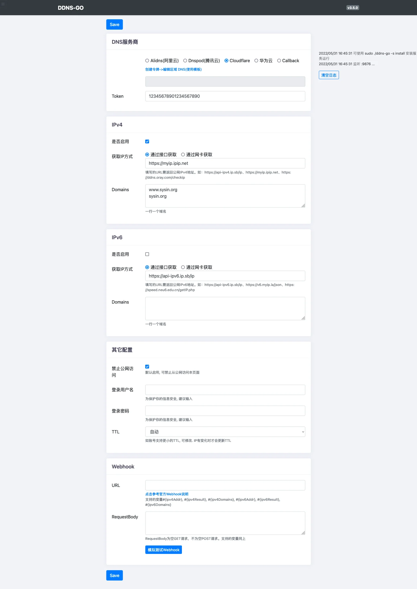

请访问原文链接：ddns-go v3.5.0 (macOS, Linux, Windows) - 免费开源 DDNS 动态域名解析工具 查看最新版。原创作品，转载请保留出处。
作者主页：sysin.org
这是一个简单好用的 DDNS 动态域名服务工具，可以自动更新域名解析到公网 IP，目前支持 Alidns (阿里云)、Dnspod (腾讯云)、Cloudflare。并且是免费和开源的！
如果你的域名注册不在上述服务商，也是可以使用的，将域名解析转入到上述服务商的免费解析服务即可，参看以下文档：
其他服务商请访问对应官方帮助页面或者咨询官方客服。
v1.0.0 发布（04 Sep 2020）：
f4d91a5feat: 在网页中快速查看最近 50 条日志- v1.0.0 发布意味着正式版本
v1.0.0 发布（20 Dec 2020）：
v3.0.0 发布（16 Sep 2021）：
v3.5.0 (23 Feb 2022)，本例使用。
当前版本：
1. ddns-go 功能特性
- 自动获得你的公网 IPv4 或 IPv6 并解析到域名中
- 支持 Mac、Windows、Linux 系统，支持 ARM、x86 架构
- 支持的域名服务商
Alidns(阿里云)Dnspod(腾讯云)Cloudflare华为云Callback百度云 - 间隔 5 分钟同步一次
- 支持多个域名同时解析，公司必备
- 支持多级域名 (sysin)
- 网页中配置，简单又方便，可设置 - 登录用户名和密码 / 禁止从公网访问
- 网页中方便快速查看最近 50 条日志，不需要跑 docker 中查看
- 支持 webhook 通知
- 支持 TTL
Callback：通过自定义回调可支持更多的第三方DNS服务商
2. 使用说明
动态 DNS 解析，通常可能是用在家里的电脑，没有固定公网 IP，但是需要远程访问的场景。
2.1 下载并运行
- 下载并解压 https://github.com/jeessy2/ddns-go/releases
- 双击运行，程序自动打开 http://127.0.0.1:9876，修改你的配置，成功
- [可选] 安装服务
Mac/Linux:sudo ./ddns-go -s install
Win(以管理员打开cmd):.\ddns-go.exe -s install
安装服务也支持 -l监听地址 -f同步间隔时间(秒) -c自定义配置文件路径 - [可选] 服务卸载
Mac/Linux:sudo ./ddns-go -s uninstall
Win(以管理员打开cmd):.\ddns-go.exe -s uninstall - [可选] 支持启动带参数 -l监听地址 -f同步间隔时间(秒) -c自定义配置文件路径。如：
./ddns-go -l 127.0.0.1:9876 -f 600 -c /Users/name/ddns-go.yaml
运行后 Web 界面如下：

2.2 获取域名 API 访问凭据
根据你的域名所在服务商，打开页面，登录后，根据提示获取凭据，然后填写到 ddns-go 的配置页面中即可。
在软件页面点击对应 DNS 服务商，下面会有提示访问链接，可以直接打开对应服务商的 API 访问凭据页面。
例如：
Alidns(阿里云)
https://ram.console.aliyun.com/manage/ak
AccessKey ID
AccessKey Secret
Dnspod(腾讯云)
https://console.dnspod.cn/account/token
ID
Token
Cloudflare
https://dash.cloudflare.com/profile/api-tokens
Token
2.3 添加解析
在 IPv4 或者 IPv6（如果有）下，Domains 中填写 dns 解析条目即可。
示例：www.domain.com，也可以解析多条，一行一条，点击 “SAVE”，提示解析成功！
此时，回到域名解析服务商管理页面 (sysin)，可以看到 dns 条目已经正确添加。
从日志可以看到，应用程序 5 分钟检查一次地址变化并同步地址解析。
2.4 配置文件
1 | macOS/Linux |
可以看到软件使用 yaml 格式保存配置文件，配置参数也很直观。
3. 在 Docker 中运行
不挂载主机目录, 删除容器同时会删除配置
1
2
3
4host模式, 同时支持IPv4/IPv6, Liunx系统推荐
docker run -d --name ddns-go --restart=always --net=host jeessy/ddns-go
桥接模式, 只支持IPv4, Mac/Windows系统推荐
docker run -d --name ddns-go --restart=always -p 9876:9876 jeessy/ddns-go在浏览器中打开http://主机IP:9876，修改你的配置，成功
[可选] 挂载主机目录, 删除容器后配置不会丢失。可替换 /opt/ddns-go 为主机目录, 配置文件为隐藏文件
docker run -d --name ddns-go --restart=always --net=host -v /opt/ddns-go:/root jeessy/ddns-go
- [可选] 支持启动带参数 -l监听地址 -f间隔时间(秒)
docker run -d --name ddns-go --restart=always --net=host jeessy/ddns-go -l :9877 -f 600
4. 相关链接

文章用于推荐和分享优秀的软件产品及其相关技术，所有软件默认提供官方原版（免费版或试用版），免费分享。对于部分产品笔者加入了自己的理解和分析，方便学习和研究使用。任何内容若侵犯了您的版权，请联系作者删除。如果您喜欢这篇文章或者觉得它对您有所帮助，或者发现有不当之处，欢迎您发表评论，也欢迎您分享这个网站，或者赞赏一下作者，谢谢！
 支付宝赞赏
支付宝赞赏  微信赞赏
微信赞赏赞赏一下
敬请注册！点击 “登录” - “用户注册”（已知不支持 21.cn/189.cn 邮箱）。 请勿使用联合登录（已关闭）。